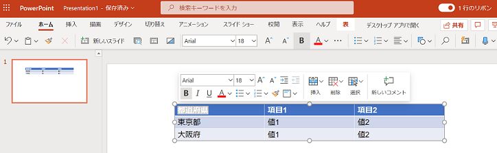

こんにちは、Office サポート チームです。
本記事では、PowerPoint Online で日本語フォントが異なるフォントで表示される問題について説明します。
現象
PowerPoint の表内の日本語フォントが、PowerPoint Online で表示すると異なるフォントで表示されます。
例えば、スライド マスターでテーマ フォントを Meiryo UI に設定しているプレゼンテーションで、PowerPoint Online 上では英数字用のフォント (例では Arial) で表示されます。

原因
この現象は問題としてフィードバックを行いました。
回避策
以下のいずれかの回避策で現象を回避できます。
1. 表のフォントを明示的に指定します。
スライド マスターでテーマ フォントを設定した場合、表のフォント自体は [+本文のフォント] となりますが、表のフォントを [Meiryo UI] など明示的に指定します。
2. 英数字用フォントを変更します。
スライド マスターでテーマ フォントの英数字用フォントとして、[Meiryo UI] など日本語に設定したいフォントを指定します。
新たな情報が確認された場合には、この記事に追記する形で公開していく予定です。
本情報の内容 (添付文書、リンク先などを含む) は、作成日時点でのものであり、予告なく変更される場合があります。